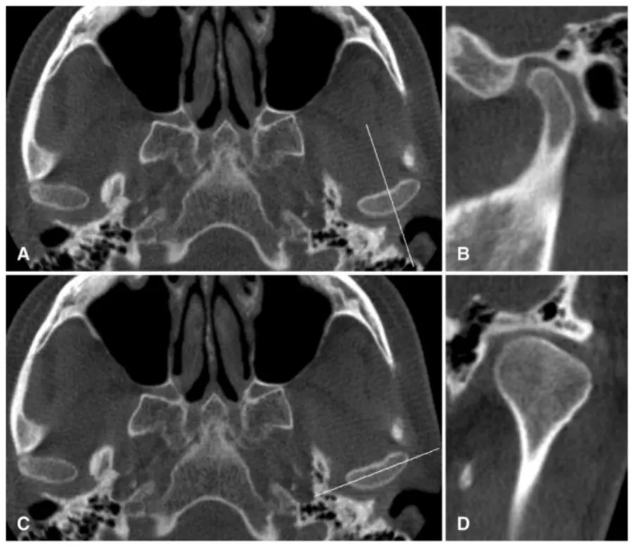

نسخه استخراجشده؛ ترجمه یا تأیید علمی انجام نشده است. وضعیت: captured
چرا آناتومی اینجا مهم است: «درک کامل آناتومی و مورفولوژی TMJ ضروری است تا اختلالات آناتومیک بهعنوان بیماری بالقوه شناسایی شوند، و یک واریانت طبیعی با ناهنجاری اشتباه گرفته نشود.»

و ابعاد کندیل: «تقریباً ۲۰ میلیمتر عرض داخلی-خارجی و ۸ تا ۱۰ میلیمتر در بُعد قدامی-خلفی.» شکل سطح فوقانی میتواند مسطح، گرد یا بهشدت محدب باشد. «این تنوعهای شکلی میتوانند در تفسیر رادیوگرافیک دشواری بسازند، و همین است که اهمیت درک دامنهی ظاهرهای طبیعی را برجسته میکند.»
و محور بلند کندیل با یک عدد: سطوح انتهایی داخلی و خارجی، قطب داخلی و خارجی نام دارند. محور بلند خطی فرضی است که این دو قطب را وصل میکند و «کمی روی گردن کندیل چرخیده، طوری که قطب داخلی به سمت خلف زاویه میگیرد و زاویهای بین ۱۵ تا ۳۳ درجه با صفحهی میدساژیتال میسازد». و «دو محور کندیلی معمولاً نزدیک مرز قدامی فورامن مگنوم یکدیگر را قطع میکنند».
و رایجترین اشتباه آناتومیک این یونیت: «بیشتر کندیلها یک ستیغ برجسته با جهت داخلی-خارجی روی سطح قدامی دارند که حد قدامی-تحتانی ناحیهی مفصلی را نشان میدهد. این ستیغ حد فوقانی فووهآی پتریگوئید است — فرورفتگی کوچکی که محل چسبندگی عضلهی پتریگوئید خارجی است. این ستیغ نباید با استئوفیت (خار) که نشانهی DJD است اشتباه شود.»
و دو عدد رشدی که تفسیر کودکان را عوض میکنند: «هرچند اجزای مندیبولار و گیجگاهی TMJ تا ۶ ماهگی کلسیفیه میشوند، کلسیفیکاسیون کامل مرزهای کورتیکال ممکن است تا ۲۰ سالگی کامل نشود. در نتیجه، تصاویر کندیل در کودکان ممکن است شواهد کم یا هیچ از مرز کورتیکال نشان دهند.»
و لایهی فیبروکارتیلاژ: «روی تصویربرداری تخت و CT دیده نمیشود. در MRI، مرز کورتیکال و فیبروکارتیلاژ هر دو بهعنوان یک ساختار واحد با سیگنال پایین (تیره) تصویر میشوند.»
و جزء گیجگاهی: از حفرهی گلنوئید یا مندیبولار در خلف و برجستگی و توبرکل مفصلی در قدام ساخته میشود. سطح خلفی برجستگی مفصلی محدب است و تحتانیترین نقطهاش قله، اپکس یا کرست نام دارد. و «در TMJ طبیعی، سقف حفرهی گلنوئید، شیب خلفی برجستگی و قله، در نمای ساژیتال یک منحنی ملایم Sشکل میسازند».
و یک هشدار آناتومیک جدی: «سقف حفرهی گلنوئید بخش کوچکی از کف حفرهی میانی جمجمه را میسازد، و اینجا تنها یک لایهی نازک استخوان کورتیکال، حفرهی مفصلی را از فضای داخلجمجمهای جدا میکند.»
و رشد حفره و برجستگی: «رشد برجستگی مفصلی به محرک عملکردی از سوی کندیل متکی است. برای نمونه، حفرهی مندیبولار در بیماران با میکروگناتی یا آژنزی کندیل بسیار کمعمق و توسعهنیافته است.» در نوزادان، حفره و برجستگی «در ۳ سال نخست رشد میکنند و در ۴ سالگی به شکل بالغ میرسند، هرچند کورتکسها میتوانند تا بزرگسالی نامشخص بمانند».
و یک واریانت که باید بشناسی: همهی بخشهای استخوان گیجگاهی میتوانند با سلولهای هوایی کوچک برخاسته از کمپلکس ماستوئید پنوماتیزه شوند. «پنوماتیزاسیون برجستگی مفصلی در تقریباً ۲٪ بیماران رادیوگرافیک دیده میشود.»
یک ابهام اصطلاحی را همینجا حل کن: «فضای مفصلی اصطلاح عمومی برای فضای رادیولوسنت میان کندیل و جزء گیجگاهی است که روی تصاویر تخت و CT دیده میشود. فضای مفصلی رادیوگرافیک حاوی خود دیسک و اتصالاتش است. این اصطلاح نباید با فضای مفصلی فوقانی و تحتانی اشتباه شود که به فضاهای بافت نرم بالا و پایین دیسک اشاره دارند.»
و تعریف موقعیت کندیل: در شرایط طبیعی، کندیل مرکزی است وقتی فضاهای قدامی و خلفی همعرض باشند. عقبرفته وقتی فضای قدامی پهنتر از خلفی باشد، و جلوآمده وقتی فضای قدامی باریکتر از خلفی.
و مهمترین عدد این بلوک، که از تشخیص بیش از حد جلوگیری میکند: «خارج از مرکز بودن کندیل در یکسوم تا نیمی از افراد بیعلامت دیده میشود، و شاخص قابلاعتمادی از وضعیت بافت نرم مفصل نیست، بهویژه چون شکل سر کندیل همیشه تقعر حفره را آینه نمیکند.» ولی «موقعیتگیری بهشدت خارج از مرکز معمولاً نمایندهی یک ناهنجاری است».
و دو موقعیت غیرطبیعی معنادار: موقعیت تحتانی با فضای مفصلی پهنشده در جهت فوقانی-تحتانی ← تجمع مایع یا خون، موقعیت فوقانی با فضای باریک یا نامرئی و تماس ظاهری اجزای استخوانی ← از دست رفتن، جابهجایی یا پرفوراسیون دیسک یا اتصالاتش. و «موقعیتگیری آشکار خلفی در برخی موارد جابهجایی قدامی دیسک، و موقعیتگیری آشکار قدامی وقتی تخریب برجستگی مفصلی مانند در JIA رخ داده باشد».
و حرکت کندیل، دو مرحله دارد: «حرکت چرخشی لولامانند میان سطح فوقانی کندیل و سطح تحتانی دیسک (در فضای مفصلی تحتانی)، و پس از آن ترنسلیشن (سُر خوردن) تحتانی و قدامی کندیل که میان سطح فوقانی دیسک و برجستگی مفصلی (در فضای مفصلی فوقانی) رخ میدهد.»
و سه عدد ترنسلیشن: در بیشتر افراد، در حداکثر باز شدن کندیل به قلهی برجستگی مفصلی یا کمی جلوتر جابهجا میشود. «کندیل معمولاً در محدودهی ۲ تا ۵ میلیمتر خلف و ۵ تا ۸ میلیمتر قدام نسبت به کرست برجستگی یافت میشود.» و «هایپرموبیلیتی وقتی مشکوک است که کندیل بیش از ۵ میلیمتر جلوتر از برجستگی جابهجا شود».
اندیکاسیونها و ضداندیکاسیونها را با هم بدان: تصویربرداری وقتی در نظر گرفته شود که ناهنجاری استخوانی یا عفونت مشکوک باشد، یا بیمار سابقهی تروما، دیسفانکشن قابل توجه، تغییر دامنهی حرکت، ناهنجاری حسی یا حرکتی، یا تغییرات قابل توجه اکلوژن داشته باشد. و در مقابل: «تصویربرداری TMJ برای صداهای مفصلی در نبود دیگر نشانهها اندیکاسیون ندارد، و نه برای بیماران بیعلامت، بهویژه کودکان و نوجوانان، پیش از درمان ارتودنسی.»
و یک واقعیت که باید در گزارشنویسی رعایت شود: «اغلب همبستگی ضعیفی میان شدت یافتههای تصویری TMJ و شدت علائم بالینی بیمار وجود دارد.» و «هر دو مفصل باید برای مقایسه تصویربرداری شوند».
و نقش هر روش:
و ضداندیکاسیونهای MRI: «بیماران با پیسمیکر یا دستگاههایی مانند کلیپس عروقی داخلجمجمهای یا ذرات فلزی کاشتهشده در ساختارهای حیاتی.» و مواد دندانی حاوی فرومغناطیس مانند استیل ضدزنگ و سیم ارتودنسی میتوانند آرتیفکت بسازند. و برخی بیماران بهدلیل کلاستروفوبیا یا ناتوانی در بیحرکت ماندن نمیتوانند تحمل کنند.
چرا اینها فراتر از خود مفصل اثر میگذارند: «چون غضروف مفصلی کندیل یک مرکز رشد برای مندیبل به شمار میرود، اختلالات این غضروف میتوانند به رشد تغییریافتهی کندیل، راموس، بدنه و زائدهی آلوئولار سمت مبتلا بینجامند.»
هایپرپلازی کندیل — بزرگ شدن و گاهی بدشکلی سر کندیل. «معمولاً یکطرفه»، «شایعتر در زنان و بیشتر پیش از ۲۰ سالگی کشف میشود»، و «خودمحدود است و با پایان رشد اسکلتی متوقف میشود». چانه میتواند به سمت غیرمبتلا منحرف شود، و بیمار اوپن بایت خلفی سمت مبتلا یا کراسبایت سمت مقابل پیدا کند.
و کلید تفکیک هایپرپلازی از نئوپلاسم: «ضخامت کورتیکال و الگوی ترابکولار کندیل بزرگشده معمولاً طبیعی است، و همین به تفکیک هایپرپلازی از نئوپلاسم کمک میکند.» و دو نشانهی شکلی: خمیدگی رو به جلوی سر و گردن طویلشده که ظاهر «L وارونه» میسازد، و خمیدگی رو به پایین مرز تحتانی مندیبل سمت مبتلا. و برای اینکه بدانی رشد کندیل هنوز فعال است یا متوقف شده، SPECT با ۹۹mTc کمک میکند — هرچند اختصاصیتش ضعیف است و ریمادلینگ یا تغییرات دژنراتیو همزمان میتوانند گمراهش کنند.
هایپوپلازی کندیل — کندیل کوچک، که میتواند مادرزادی، تکاملی یا اکتسابی (تروما، عفونت، پرتودرمانی در دورهی رشد) باشد. در شکل شدید مادرزادی، آپلازی. «کندیل مرکز رشد مندیبل است؛ بنابراین هایپوپلازی کندیل معمولاً با درجهای از هایپوپلازی یکطرفهی مندیبل و عدم تقارن صورت همراه است.» و انحراف خط وسط به سمت مبتلا که هنگام باز شدن تشدید میشود.
و ترفند تفکیک هایپوپلازی از هایپرپلازی سمت مقابل: «گاهی دشوار است تعیین شود آیا هایپوپلازی کندیل هست یا سمت مقابل بزرگ شده. بررسی دقیق مرز تحتانی برای نچ آنتهگونیال برجسته (هایپوپلازی) در برابر خمیدگی رو به پایین (هایپرپلازی) کمککننده است.»
هایپرپلازی کرونوئید — طویل شدن زائدهی کرونوئید. «شکل تکاملی بیشتر دوطرفه است و اغلب در مردان جوان با سابقهی محدودیت پیشروندهی باز شدن دهان تشخیص داده میشود. این وضعیت عموماً بدون درد است.» شکل اکتسابی معمولاً ثانویه به محدودیت حرکت کندیل مانند در انکیلوز پدید میآید. و اگر مفصل کاذبی میان کرونوئید هایپرپلاستیک و سطح خلفی استخوان زیگوماتیک شکل بگیرد، بیماری ژاکوب نامیده میشود.
و معیار تصویریاش یک عدد است: «زوائد کرونوئید طویلاند و نوکشان دستکم ۱ سانتیمتر بالاتر از لبهی تحتانی قوس زیگوماتیک امتداد مییابد.» و «ظاهرهای رادیوگرافیک TMJ معمولاً طبیعیند» — و همین است که آن را به یک تشخیص فراموششده تبدیل میکند. «گنجاندن زوائد کرونوئید حین تصویربرداری TMJ کمک میکند تا هایپرپلازی کرونوئید از قلم نیفتد.»
کندیل دوشاخه — «کندیلی که فرورفتگی، نچ یا شکاف عمودی در سطح سرش دارد» و ظاهر «دوسر» میسازد. بیشتر یک یافتهی اتفاقی در پانورامیک است، نادر و اغلب یکطرفه. شایعترین شکلش فرورفتگی سطح فوقانی است که در نمای کرونال اصلاحشده خطنمای قلبیشکل میدهد. علتها: تروما (شکستگی طولی، یا جابهجایی کامل پس از شکستگی و ریمادلینگ کندیل دوم)، و نوار فیبروز جنینی باقیمانده. «درمان اندیکاسیون ندارد مگر درد یا اختلال عملکرد حاضر باشد.»
سؤالهای این مرور سختترند و بسیاری یک یافته میدهند — شکل، محل، سیگنال یا عدد — و میپرسند کدام تشخیص یا کدام روش را میسازد.